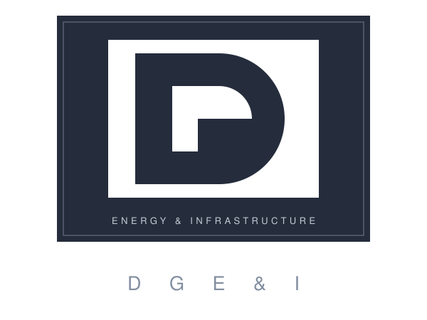

DGE&I Monogram · used inside DGE&I workstream only

Hierarchy
ORM is the parent brand. The DG monogram is reserved for DGE&I-specific surfaces
(investor portal, site decks). It does not appear on the public ORM website
outside of contextual workstream references.